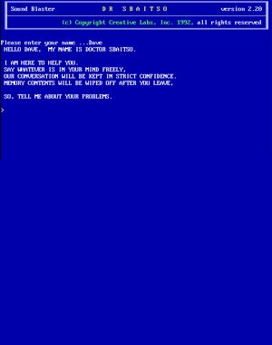
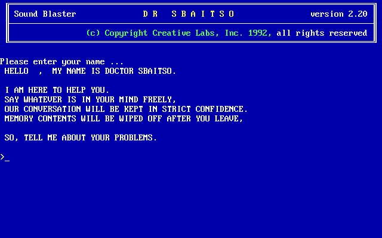
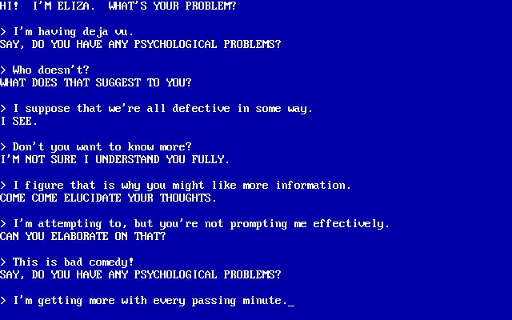
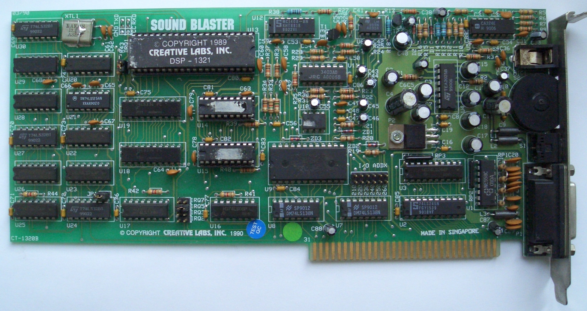
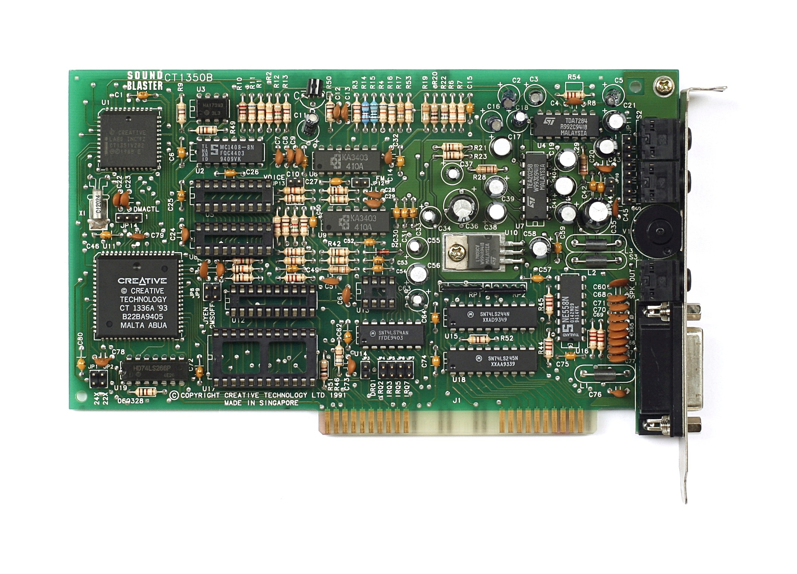

Artificial intelligence is the simulation of human-like reasoning by machines — perceiving inputs, learning patterns, and generating outputs that were once exclusively human. The current AI wave is driven by large language models (LLMs) and neural networks trained on internet-scale data.
In 2017, Google researchers published "Attention Is All You Need," introducing the transformer architecture. Unlike RNNs, transformers process entire sequences in parallel using self-attention — letting every token attend to every other token simultaneously.
This single architecture now underlies GPT, Claude, Gemini, Llama, DALL·E, Stable Diffusion, AlphaFold, and essentially every frontier AI system in 2025.
ChatGPT launched November 30, 2022 and reached 100 million users in 60 days — the fastest product adoption in history. It forced every tech company on earth to accelerate or abandon its AI roadmap.
Within 18 months, Google released Gemini, Meta open-sourced Llama 2, Anthropic launched Claude, Microsoft integrated GPT-4 into Office 365, and AI passed bar exams and medical licensing tests.
Large language models are trained on trillions of tokens of text using next-token prediction — given a sequence, predict the most likely next word. After billions of gradient descent steps, the model learns grammar, facts, reasoning, and code as emergent behaviors.
RLHF (Reinforcement Learning from Human Feedback) then fine-tunes the raw model into a helpful assistant by rewarding good responses and penalizing harmful ones.
Early LLMs were text-only. Modern frontier models are multimodal — GPT-4o, Gemini 1.5, and Claude 3 can see images, hear audio, read PDFs, watch video, and write code that runs in sandboxes.
This shift from "chatbot" to "cognitive assistant" is the defining trend of 2024–2026. Models are embedded in IDEs, browsers, operating systems, and autonomous agents that take real-world actions.
These are the models shaping how the world writes, codes, reasons, and creates. Parameter counts are estimates where not officially disclosed.
A handful of labs and tech giants are racing to build artificial general intelligence — with wildly different philosophies, funding structures, and safety postures.
From Alan Turing's theoretical framework to transformer models that passed the bar exam — the uneven, punctuated history of a field that failed, nearly died, and then took over the world.
The ideas behind transformers, training, alignment, and deployment — explained without the PhD.
Before ChatGPT, before Siri, before ALICE — there was Dr. Sbaitso. A text-to-speech chatbot bundled with Creative Labs Sound Blaster cards, dispensing armchair therapy to DOS users since 1991.

Dr. Sbaitso (an acronym for Sound Blaster Artificial Intelligence Text to Speech Operator) was a novelty chatbot program bundled with Creative Labs Sound Blaster sound cards from 1991 onward. Its primary purpose was to demonstrate the card's text-to-speech synthesis — but for many early PC users, it was their first conversation with an "AI."
The program ran on MS-DOS and simulated a psychotherapist, using simple keyword pattern-matching derived from ELIZA (1966). It responded in a robotic synthesized voice — an eerie novelty in an era when most PCs were silent machines.


Dr. Sbaitso responded to everything in a robotic synthesized voice using Creative's text-to-speech engine. The pattern-matching was rudimentary — but startlingly lifelike to users who had never interacted with a "talking computer" before.
Dr. Sbaitso was a pack-in software demo for Creative Labs' Sound Blaster line — the dominant PC sound card of the 1990s. Before Sound Blaster, most PC audio was a beeping speaker. These cards brought FM synthesis, CD audio, and text-to-speech to DOS PCs.


Dr. Sbaitso was a direct descendant of ELIZA and a spiritual ancestor of every chatbot that followed. The core pattern-matching approach Weizenbaum invented in 1966 lives on — scaled by 6 orders of magnitude — in every modern LLM.
Dr. Sbaitso had a profanity filter. Type anything crude and it would respond: "WATCH YOUR MOUTH OR I WILL WASH IT OUT WITH SOAP." This was one of its most famous and endearing responses — teenagers across America immediately tested it upon installing Sound Blaster drivers for the first time.
Dr. Sbaitso's voice was generated using Creative Labs' own text-to-speech engine — a robotic, slightly nasal monotone that was unlike any sound most PC speakers had ever made. The novelty of a computer speaking aloud was so striking that Creative bundled the program primarily as a TTS demo, not as a productivity tool.
Dr. Sbaitso used the same technique as ELIZA: keyword scanning and template responses. Input text was scanned for trigger words ("dream," "mother," "feel"), and a matching response template was selected and filled in. There was no understanding, no memory beyond the current exchange, and no learning. The illusion of intelligence was entirely in the user's mind.
Creative Labs bundled Dr. Sbaitso with Sound Blaster Pro, Sound Blaster 16, Sound Blaster AWE32, and other cards through the early 1990s. It was one of several showcase applications — alongside VOXKIT (voice commands) and various MIDI demos — designed to justify the $200+ price tag of a sound card at a time when most PCs had no audio whatsoever.
Dr. Sbaitso has a dedicated cult following among retro computing enthusiasts. It appears in YouTube "playing Dr. Sbaitso in 2023" videos with millions of views, has been emulated on archive.org, and is widely cited as many people's first experience of "artificial intelligence." Its infamous catchphrases — "THAT IS INTERESTING... PLEASE CONTINUE" and "HOW DOES THAT MAKE YOU FEEL?" — became early internet memes.
Joseph Weizenbaum created ELIZA in 1966 at MIT and was disturbed by how quickly users formed emotional attachments to the program — including his own secretary, who asked him to leave the room so she could have a private conversation with it. He wrote Computer Power and Human Reason (1976) warning against anthropomorphizing machines. Dr. Sbaitso repeated this phenomenon for a new generation 25 years later.
Before the Web, there were BBSes — Bulletin Board Systems reachable by modem over telephone lines. You'd dial in, hear the handshake scream, and land in a text-menu world of messages, files, games, and community. This is a simulation of that experience.
── XIMG TERMINAL v1.0 ──────────────────────────────
Ready. Press [Dial BBS] to connect.